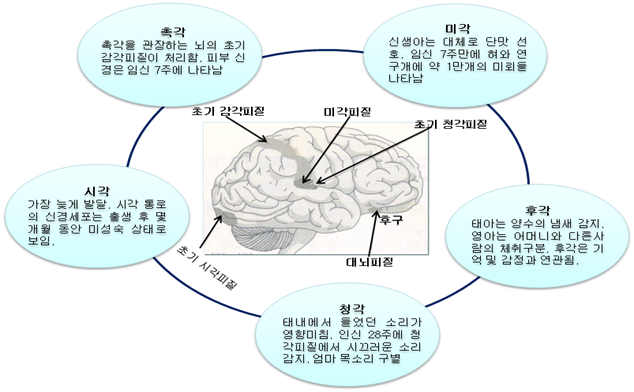
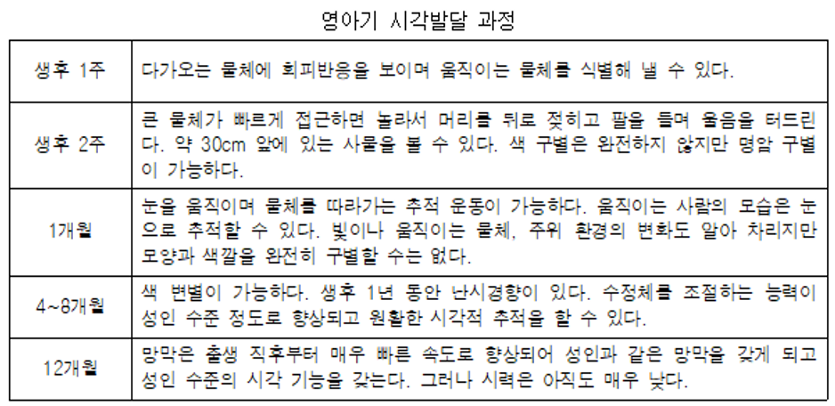
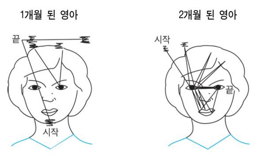

감각(sensation)은 신체자극이 감각기관을 통해 부여하는 지각(perception)이라고 한다.
감각능력(sensibility)은 출생 전부터 발달하기 시작하여 출생 후 환경에서 다양한 경험을 통하여 발달한다.
출샌 후 감각적인 특징과 두뇌의 발달 기능과 연계성은 다음과 같다.

1. 촉각의 탐색능력은 인지발달 증가
촉각은 물체가 피부와 접촉했을 때 느끼는 감각을 의미한다. 영아가 주위의 사물을 탐색하는 주요 수단이며, 인지발달에 있어 신기할 정도의 중요한 역할을 한다. 신생아는 주변을 탐색하기 위해 처음에는 입술을 사용하고 차츰 손의 촉감을 통하여 사물을 탐색한다. 이 시기는 입술과 입 주위가 민감하며, 손바닥과 발바닥 촉각을 통하여 예민하게 자신의 주변 정보를 확보하는 기능을 담당한다.
-신생아는 잇몸과 혀의 느낌으로 물체를 탐색하고 이해할 뿐이다.
-6개월 이후 촉각적 경험으로 물체의 차이를 구분한다.
-12개월 무렵에는 익숙한 물체는 느낌으로 자연스럽게 이해한다.
아기에게 옷을 갈아입힐 때 몸을 많이 움직이거나 울음으로 불편을 표현하는 것은 자신의 체온보다 낮은 온도에서 민감하게 반응하는 것이다. 피부에 주사를 맞을 때 갑자기 울음을 터뜨리는 현상처럼 촉각적 경험은 영아가 외부세계에 대한 정보와 주변 환경에 대한 지식을 습득하는 주요 수단이다. 특히 양육자가 안아주거나 가벼운 신체적 긍정적 접촉은 안정감과 신뢰감을 형성에 매우 중요한 요인이다.
2. 미각발달과 편식의 연계성
혀의 미뢰는 출생 전 어머니가 먹은 음식과 출생 후 수유기간에 경험한 맛에 따라서 입맛이 형성된다. 신생아는 단맛, 쓴맛, 신맛, 짠맛의 기본 맛을 구별할 수 있는데 얼굴 표정, 심장박동수 또는 무엇인가를 빠는 입 모양으로 측정할 수 있다.
어머니의 젖이 달기 때문에 단 음식에 얼굴 근육이 이완되고 입술을 핥거나 빨기반응을 보인다(Steinter et al, 2001). 신맛에는 입술을 오므리고, 쓴맛， 짠맛을 나타내는 표정으로 맛의 선호를 드러낸다.
-2~3개월경에는 특정한 맛에 대한 반응을 한다.
-4개월경에는 짠맛에 거부반응을 나타낸다.
-6개월경에는 맛에 대해 싫고 좋은 감정을 나타낸다.
이유식 할 때 다양한 음식을 제공하여 여러 가지 맛을 경험시켜줄 필요가 있다. 그렇지 않을 경우 2~3세에 특정 음식에 대한 선호도가 뚜렷하여 새로운 음식을 거부하므로 편식현상이 나타낸다.
3. 후각발달은 감정부분의 안정감 도모
후각은 출생 초기부터 생존을 위해 가장 빨리 발달한다. 태어난 후 지 1개월 동안 어머니를 구별할 수 없는 상황에서 다른 냄새보다 어머니의 젖과 몸에서 나는 냄새를 알아차리는 본능적인 반응이다. 어머니의 냄새는 기분 좋은 것들과 주로 연관되어 있기 때문에 감정부분의 안정감을 도모한다. 이 시기는 냄새가 나는 위치를 확인도 할 수 있고, 그 냄새가 불쾌할 때에는 본능적으로 스스로 방어하기도 한다.
12개월이 되면 지각한 냄새를 서로 구분할 수 있으며 3세가 되면 냄새를 가리기 시작한다. 특히 암모니아, 질산, 썩은 달걀 냄새와 같은 자극적 냄새를 맡으면 얼굴을 찌푸리고, 고개를 돌리는 반응을 보인다. 반면, 익숙한 좋은 냄새에는 유쾌한 표정을 짓는다(Berk, 1996).
4. 청각은 태내부터 민감하게 가장 먼저 발달
청각은 태어나기 전부터 발달되어 있으며 생후 몇 개월에 걸쳐 민감성이 크게 향상된다.
-생후 3일만 되어도 양육자의 소리, 기침소리나 방문 닫히는 소리 방향으로 머리와 눈을 돌린다.
-2~3개월 슬픈 소리나 행복한 소리에 대하여 구별할 수 있으며, 소리가 높아질수록 심장박동과 몸의 움직임이 증가한다. -6~8개월이 지나면 모든 언어에서 사용되는 음소들의 변별이 가능하여 자신의 모국어에 나타나지 않은 음을 지각하는 능력은 성인보다 더 정확하게 안다.
영아는 소리의 진원지를 판단하고 추적할 수 있는 능력을 갖추고 있어서 모든 종류의 소리에 반응할 수 있다. 이 시기의 청력은 소리에 대한 민감도에 따라 변별력이 증가할 뿐 아니라 지각능력도 함께 향상된다.
5. 시각은 모든 감각 기능 중 가장 늦게 발달
시각은 출생 후 여러 감각 중 가장 늦게 발달하는 감각능력이다.
영아의 시력은 매우 약한 편으로 물체에 시선을 고정시키거나 초점을 맞추는 데 어려움이 있다. 이 시기는 양육자도 흐릿하게 보이기 때문에 냄새로 목소리로 알아챈다. 감각정보의 80%가 눈을 통해 인식하지만 시각조절에 필요한 뇌피질이 늦게 성숙하기 때문에 출생 직후 눈의 초점을 잘 맞추지 못하는 사시(斜視) 경향이 있다.

1) 생후 1주 : 다가오는 물체에 회피반응을 보이며 움직이는 물체를 식별해 낼 수 있다.
4) 생후7~8주가 되면 응시하는 것이 가능하여 움직이는 물체를 따라가는 추적을 한다.
5) 3~4개월경에는 성인과 같은 수준으로 어떤 대상에 대해 초점을 모을 수 있다.
6) 4~5개월: 색 변별이 가능하다. 생후 1년 동안 난시경향이 있다.

영아 1개월에는 양육자의 얼굴 윤곽만 응시하고, 2개월 영아는 얼굴 안에 있는 입, 눈, 머리 부분을 더 많이 응시하는 것으로 나타났다. 3개월경부터 양육자의 얼굴에 대한 도식이 형성되어 친숙한 양육자와 그 외 낯선 사람을 구별할 수 있을 정도로 발달한다(Shaffer, 2002).
이와 같이 영아는 물체의 전체를 보는 것이 아니라 일부분만 보다가 연령이 높아질수록 발달한다(강수균 외, 1999). 시각발달 과정에서 움직이는 물체를 볼 때 초기에 하나의 대상에 초점을 두고 보다가 차츰 정교한 시각적인 추시 능력을 발휘한다.
출처:
강수균, 이규식, 전헌선, 최영하(1999). 감각운동 지각훈련. 대구대학교 출판부.
김영애, 선애순, 정효정(2018). 영유아발달. 양서원.
권순황, 선애순,이형선(2015), 영아발달. 양서원.
뉴스위크 한국판 편집부(2003). Newsweek 귀여운 우리아기 Ⅱ.
박성연(2010). 아동발달. 교문사.
정옥분(2013). 영아발달. 학지사.
Berk, I. E. (1996). Infants, children, and adolescents(2nd ed.). Needham Heights, MA: AlIyn & Bacon.
Shaffer, D. R. (2002). Developmental psychology childhood and adolescence. (6th ed.), Wadaworth/ Thomson Learning.
2022.01.15 - [분류 전체보기] - 뇌의 구조와 기능 - 영아기에 성장급등기
뇌의 구조와 기능 - 영아기에 성장급등기
뇌의 구조와 기능은 영아기에 가장 중요 출생 시 신생아의 두뇌는 평균 300~400g 정도로 성인의 25~30% 정도에 불과하지만, 2세경이 되면 75%까지 증가하는 두뇌의 성장급등기(brain growth spurt)를 맞이
think-sis.co.kr